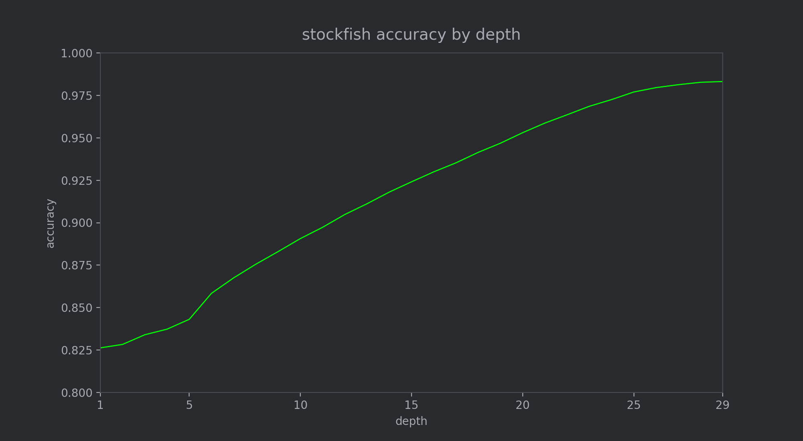
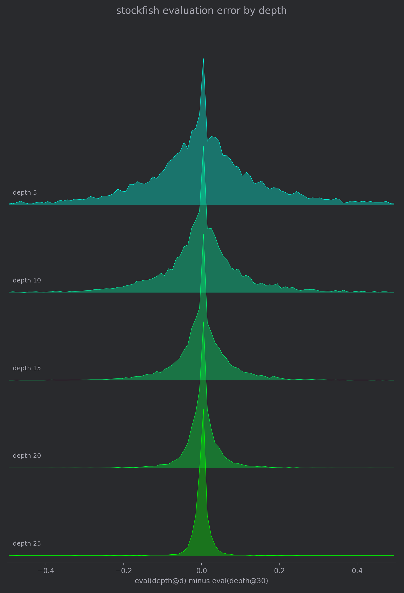

3 minutes
How well can Stockfish Estimate Itself?
When I built the Gigafish dataset, I deliberately chose to use positions evaluated at depth 10. These positions could be evaluated relatively quickly on my machine, but there was an accuracy tradeoff. At depth 10, Stockfish might not see or fully appreciate a tactic which becomes apparent at depth 15.
At a conceptual level, shallow searches attempt to approximate the result of deeper searches. For instance if search terminates at an NNUE leaf node, its neural network will attempt to approximate the result of searching all child nodes. In the extreme case, if we had perfect NNUE evaluators no search would be necessary at all.
Centipawns and Logs
A Stockfish evaluation comes in the form of centipawns: 1/100th of a pawn, always from white’s perspective. So if white is winning by one pawn, the Stockfish eval will be +100. If black is winning by 2 pawns, the Stockfish eval will be -200.
Therefore, the question we would like to ask is: how does the centipawn error change as Stockfish evaluation gets deeper?
However, there are a few issues with simply measuring centipawn error, which I also discussed in What is a Blunder in Chess?:
- The first practical issue is that this centipawn scale has to account for checkmate positions. White might be up two queens (+1800) but that’s still not as good as having a forced checkmate. We can somewhat get around this by saying that forced mate positions are worth something like 10 pawns, but now we lose the distinction between +1000 and +2000.
- Not all errors are equally important. A 100 centipawn difference is a lot less important when white is already up a queen. But in an equal position, it’s the kind of difference which can decide games.
- Relatedly, in winning positions Stockfish evaluations tend to fluctuate a lot as depth increases, as the engine finds that the losing player must give up more and more to stay in the game. However, whether the evaluation is +1200, +3500, or #8, white will almost certainly win this game.
All of these factors are pointing in the same direction: centipawn is the wrong metric. What we really should be using is the difference in estimated win probability, which we can get from this Lichess formula:
$$ \text{win %} = \frac{ 2 }{1 + e^{-0.00368608 * cp}} - 1 $$
Intuitively this seems right. A 200 centipawn mistake (on the x-axis above) is barely noticeable above 1000, but catastrophic at 0. This also has the nice property of aligning forced mates with large centipawn evaluations: forced mate for white means white has a 100% chance of winning, and +2000 is very close to that.
Accuracy by depth

Measuring on 10k positions, we can see that accuracy improves most between depth 6 and depth 25.
Now that we’ve established the motivation for win percentage prediction accuracy as the metric to track, we can see how well this improves as depth increases.
It is interesting to note that even at depth 1, where we are just doing argmax over NNUE leaf values, Stockfish is still 82.5% accurate
We can also see that there is a large jump in accuracy between depths 5 and 6, and up to depth 25 there is steady improvement. I believe that the jump between depths 5 and 6 is the result of foiled quiescence searches: Stockfish might be missing tactics which contain a quiet move.

The distribution of errors in estimated win probability at depths 5, 10, 15, 20 and 25 relative to depth 30. The deeper we search, the tighter the estimation is.